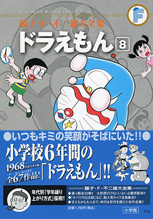

| |

定価：本体1,700円＋税
A5判／664ページ
好評発売中！
★は初めて単行本に収録される
作品です。
※収録内容は変更になる
場合があります。

|
ひっこし地図（小一75年09月号）
★ごきぶりふえ（小一75年10月号）
とばしあな（小一75年11月号）
★のびちぢみスコープ（小一75年12月号）
空とぶ荷ふだ（小一76年01月号）
ふしぎな戦車（小一76年02月号）
おくれカメラ（小一76年03月号）
ロボットペーパー（小二76年04月号）
さいみんグラス（小二76年05月号）
くすぐりノミで笑おう（小二76年06月号）
大空中戦（小二76年07月号）
大男がでたぞ（小二76年08月号）
痛みはね返りミラー（小二76年09月号）
声のかたまり（小二76年10月号）
勉強べやのつりぼり（小二76年11月号）
つきぬけざぶとん（小二76年12月号）
いただき小ばん（小二77年01月号）
手にとり望遠鏡（小二77年02月号）
ナゲーなげなわ（小二77年03月号）
家がだんだん遠くなる（小三77年04月号）
音のない世界（小三77年05月号）
ホラふきご先祖（小三77年06月号）
雲ざいくで遊ぼう（小三77年07月号）
人喰いハウス（小三77年08月号）
シンガーソングライター（小三77年09月号）
ロボッターの反乱（小三77年10月号）
のび太の名場面（小三77年11月号）
ムシャクシャカーッとしたら（小三77年12月号）
空高くたこを落とせ（小三78年01月号）
バイバイン（小三78年02月号）
ゴマロック（小三78年03月号）
未知とのそうぐう機（小四78年04月号）
無敵コンチュー丹（小四78年05月号）
新聞社ごっこセット（小四78年06月号） |
空で遊んじゃあぶないよ（小四78年07月号）
動物くんれん屋（小四78年08月号）
天井うらの宇宙戦争（小四78年09月号）
野比家が無重力（小四78年10月号）
あの窓にさようなら（小四78年11月号）
しあわせのお星さま（小四78年12月号）
出てくる出てくるお年玉（小四79年01月号）
お医者さんカバン（小四79年02月号）
答え一発！ みこみ予ほう機（小四79年03月号）
自動質屋機（小五79年04月号）
苦手つくり機（小五79年05月号）
パンドラのお化け（小五79年06月号）
強力ハイポンプガス（小五79年07月号）
人よけジャイロ（小五79年08月号）
ぼくをタスケロン（小五79年09月号）
カンズメカンでまんがを（小五79年10月号）
ゴキブリカバー（小五79年11月号）
サンタメール（小五79年12月号）
ナワバリエキス（小五80年01月号）
のび太の地底国（小五80年02月号）
ハッピープロムナード（小五80年03月号）
めだちライトで人気者（小六80年04月号）
オンボロ旅館をたて直せ（小六80年05月号）
アニメ制作なんてわけないよ（小六80年06月号）
みせかけモテモテバッジで大さわぎ
（小六80年07月号）
ぼくよりダメなやつがきた（小六80年08月号）
透視シールで大ピンチ（小六80年09月号）
のら犬「イチ」の国（小六80年10月号）
しずちゃんさようなら（小六80年11月号）
ジャイアンリサイタルを楽しむ方法
（小六80年12月号）
「真実の旗印」はつねに正しい（小六81年01月号）
のび太が消えちゃう？（小六81年02月号）
★のび太王国誕生（小六81年03月号） |